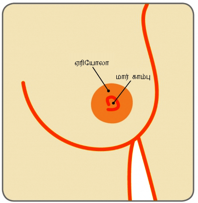
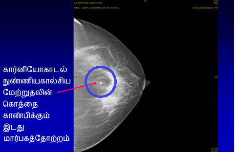

மார்பகம்

மார்பகம்
முலைகாம்பு

ஒன்பது முறை விம்பிள்டன் ஒற்றையர் சாம்பியனாகிய விளையாட்டு வீராங்கனை மார்ட்டினா நவ்ரட்டிலோவாவுக்கு மார்பகப் புற்றுநோயின் ஒரு ஆரம்ப நிலையான டக்டல் கார்சினோமா இன் சிட்டு (DCIS) கண்டறியப்பட்டது. அவருக்கு 2010-இல் 53 வயதாகியது, நான்கு ஆண்டுகளுக்கு அவர் தனது வருடாந்த ஸ்கிரீனிங் மாமோகிராமைச் செய்யாமல் தவிர்த்தார் 40 வயதிலிருந்து வருடாந்தம் ஸ்கிரீனிங் மாமோகிராமைச் செய்ய வேண்டுமெனப் பரிந்துரைக்கப்படுகின்ற போதிலும் அவரது வருடாந்த பரிசோதனைகளைத் தொடர்ந்து வந்த போது, அவரது ஆரோக்கியமான வாழ்க்கைமுறையும் நிலையும் குறிப்பிட்ட சில தன்னிறைவை உருவாக்கியதை ஏற்றுக்கொள்கிறார்.
“நான் நான்கு ஆண்டுகளாக மாமோகிராம் செய்தேன்” என 2010-இல் ஒரு பேட்டியில் கூறினார். எல்லாருக்கும் அலுவல் உள்ளது, ஆனால் தவறுகளைச் செய்ய வேண்டாம். நான் சரியாக வடிவத்தில் இருக்கிறேன், சரியாகச் சாப்பிடுகிறேன், இது எனக்கு ஏற்பட்டது. மற்றொரு வருடம், எனக்கு பெரிய சிக்கல் ஏற்பட்டிருக்கலாம்”. அதிர்ஷ்டவசமாக, புற்றுநோய் அதன் மிகவும் ஆரம்ப கட்டத்திலேயே கண்டறியப்பட்டது. அவருக்கு 2010-இல் பரந்த குறிப்பிட்ட இடத்தில் ஒரு பகுதி வெட்டியகற்றப்பட்டு (பெரும்பகுதி நீக்கம்), கதிரியக்கச் சிகிச்சை நிறைவடைந்தது.
பிரபலமான பாடகியும், ஒன்பது முறை கிராமி விருது பெற்றவருமான ஷெரைல் கிராவேக்கும் வேறொரு நன்கு பிரபலமான ஹாலிவுட் நடிகருமான கிரிஸ்டைன் ஆப்பிள்கேட்டுக்கும் ஸ்கிரீனிங் மாமோகிராம் செய்ததன் காரணமாக ஆரம்ப நிலை தண்டுப்படா மார்பகப் புற்றுநோய் இருப்பது கண்டறியப்பட்டது.
DCIS என்பது என்ன?
மார்பகமானது சிறுகுழாய்கள், சிறுசோணைகள் மற்றும் கொழுப்புத் திசுவால் ஆனது. டக்டல் கார்சினோமா இன் சிட்டு (DCIS) என்பது மார்பகப் புற்றுநோயின் ஆரம்ப வடிவம், இதன் போது புற்றுநோய்க் கலங்கள் சிறுகுழாய்களில் (இவை முலைக்காம்புக்கு பாலைக் கொண்டு செல்கின்றன) உட்புறத்தில் இருக்கும். இது புற்றுநோய்க்கு முந்தைய நிலை, இதன்போது, புற்றுநோய்க் கலங்கள் அந்தப் பால் சிறுகுழாய்களுக்கு அப்பால் சாதாரண சுற்றியுள்ள மார்பகத் திசுவுக்குள் பரவக்கூடிய ஆற்றலை உருவாக்கியிருக்காது.
DCIS எவ்வளவு பொதுவானது?
அமெரிக்கன் புற்றுநோய்ச் சமூகத்தின் புள்ளிவிவரப்படி, அமெரிக்காவில் ஒவ்வொரு ஆண்டும் சுமார் 60,000 DCIS நோயாளிகள் ஒவ்வொரு ஆண்டும் கண்டறியப்படுகிறார்கள். (ஒவ்வொரு ஆண்டும் 5 பேரில் ஒருவருக்குப் புதிதாக மார்பகப் புற்றுநோயிருப்பதாகக் கணக்குள்ளது). இந்தியாவில், இந்திய மருத்துவ ஆராய்ச்சிச் சபையின் (ICMR) படி, ஒவ்வொரு ஆண்டும் புதிதாக சுமார் 150,000 பேருக்கு மார்பகப் புற்றுநோய் இருப்பதாகக் கண்டறியப்படுகிறது. இருப்பினும், DCIS சம்பவங்கள் குறித்து துல்லியமான புள்ளிவிவரங்கள் எதுவுமில்லை. விழிப்புணர்வு இல்லாததாலும் ஒழுங்கமைக்கப்பட்ட ஸ்கிரீனிங் திட்டம் இல்லாததாலும், எங்கள் நாட்டில் 60மூ-க்கும் அதிகமான மார்பகப் புற்றுநோய்கள் மேம்பட்ட நிலையில் உள்ளன, இவ்வாறு பாதிக்கப்பட்டவர்களில் பலர் அதைக் கண்டறிந்து ஒரு ஆண்டுக்குள் பலியாகுவதும் குறிப்பிடத்தக்கது. இந்தியாவில் ஒவ்வொரு பத்து நிமிடத்திற்கும் ஒரு பெண் புற்றுநோய்க்குப் பலியாகிறாள்
DCIS எவ்வாறு அறிமுகப்படுத்துகிறது?
DCIS வழக்கமாக எந்தவொரு அறிகுறியுடனும் அறிமுகப்படுத்துவதில்லை. DCIS-இன் மிகப் பெரும்பான்மையானது (80%-ஐ விட அதிகம்) ஸ்கிரீனிங் மாமோகிராஃபியில் கண்டறியப்படுகின்றன . DCIS-ஆனது முலைக்காம்பிலிருந்து இரத்தக் கறையான திரவ வெளியேற்றம், முலைக்காம்பைச் சுற்றி சொறி அல்லது மிக அரிதாக மார்பகத்தில் கட்டி போன்றவற்றுடன் அறிமுகமாகலாம்.
DCIS-ஆனது எவ்வாறு அடையாளம் காணப்படும்?
DCIS-ஆனது வழக்கமான மார்பக ஸ்கிரீனிங் மதிப்பீட்டில் கண்டறியப்படுகிறது. மதிப்பீட்டில் சிறப்பு நிபுணரால் மருத்துவ மார்பகப் பரிசோதனை, மார்பகப் படமாக்குதல் (இரு மார்பகங்களின் மாமோகிராஃபி மற்றும் மார்பகங்களின் அல்ட்ராசவுண்ட்) மற்றும் ஊசித்துளை உயிர்த்திசுப் பரிசோதனை (மும்மடி மதிப்பீடு) ஆகியவை அடங்கும்.

DCIS ஆனது கட்டியில் மிக அரிதாகக் காணப்படுவதால், மருத்துவ மார்பகப் பரிசோதனை வழக்கமாக உதவிகரமில்லை. மார்பக ஸ்கிரீனிங்குக்கான தங்கத் தரநிலையான மாமோகிராம் ஆனது வழக்கமாக ஒரு அசாதாரண தோற்ற (வடிவம் மாறும்) பெருகால்சியப்படிவுகளன், அதாவது மாமோகிராமில் வெள்ளைப் புள்ளிகளாகத் தோன்றும் கால்சியத்தின் நுண்ணிய தூசுகளின் கொத்தாகக் காட்சியளிக்கும். இருப்பினும் மாகால்சியப்படிவுகள் எல்லாமே புற்றுநோய் சார்ந்தவை அல்ல என்பதை நினைவில் வைத்திருக்க வேண்டும் DCIS-ஐக் கண்டறிவதற்கு பலதுறையைச் சேர்ந்த குழுவின் திறமையும் கடுமுயற்சியும் தேவை.



இறுதியாக, நோயைக் கண்டறிவதற்கு, ஊசித் துளை உயிர்த்திசுப் பரிசோதனையைச் செய்வதன் மூலம் ஒரு திசுத் துண்டு அகற்றப்படும், இது குறித்த பகுதியில் மட்டும் மயக்கமருந்தை அளித்து குறுகிய இட நுண் (ஸ்டீரியோடாக்டிக்) வழிகாட்டலின் கீழ் (மாமோகிராஃபியின் உதவியுடன்) செய்யப்படும் தொட்டுணரக்கூடிய மார்பகக் கட்டிகளுக்கு பொதுவாகப் பயன்படுத்தப்படும். அடுத்த வகையான ஊசி உயிர்த்திசு பரிசோதனை நுண்ணிய ஊசி உறிஞ்சல் (ஃபைன் நீடில் ஆஸ்பிரேஷன்) உயிர்த்திசுப் பரிசோதனை (FNAC) ஆனது தவறாக வழிகாட்டலாம், மேலும் அது DCIS-இலிருந்து ஊடுருவும புற்றுநோயை (மார்பகத் திசுவுக்குள் பரவியுள்ள புற்றுநோய்) அடையாளம் காணாது. ஊசித் துளை உயிர்த்திசுப் பரிசோதனையை (புற்றுநோய்) அடையாளம் காணாது ஊசித் துளை உயிர்த்திசுப் பரிசோதனையை விட வேறு எதுவும் துல்லியமானது அல்ல.

சில சந்தர்ப்பங்களில், ஊசித் துளை உயிர்த்திசுப் பரிசோதனையைப் பயன்படுத்தி அடையாளத்தைப் பெற நுண்கால்சியப்படிவுகளின் கூட்டம் மிக நுண்ணியதாகவும் இருக்கும் போது, நோய் அடையாளத்தைப் பெற நுண்கால்சியப்படிவுகளை அடையாளம் காணுவதற்காக சிறந்த வழிகாட்டி வயரைப் பயன்படுத்தி உடல் முழுவதற்குமான மயக்கமருந்தை அளித்து உயிர்த்திசுவை வெட்டியெடுப்பது அவசியமாகலாம்.
DCIS-க்கு எவ்வாறு தரமிடப்படுகிறது, அதன் முக்கியத்துவம் என்ன?
DCIS ஆனது நுண்ணோக்கியின் கீழ் கலங்களின் தோற்றத்தையும் இந்தக் கலங்கள் எவ்வளவு விரைவாகப் பிரிகின்றன என்பதையும் பொறுத்து தரமிடப்படுகிறது. இது உயர்ந்த தரம், இடைநிலையான தரம் மற்றும் குறைந்த தர DCIS எனத் தரமிடப்படலாம். DCIS-க்குச் சிகிச்சையளிக்காமல் விட்டால், புற்றுநோய்க் கலங்கள் இறுதியில் சிறுகுழாய்களிலிருந்து சூழவுள்ள மார்பகத் திசுவுக்குள் பரவும் ஆற்றலை உருவாக்கக் கூடும். இது ஊடுருவும் மார்பகப் புற்றுநோய் எனப்படும் உயர் தர DCIS-ஐ விட குறைந்த தர DCIS ஒரு ஊடுருவும் மார்பகப் புற்றுநோயாக மாறும் சாத்தியம் குறைவாகும்.
DCISக்கு எப்படி சிகிச்சையளிக்கப்படுகிறது?
சிகிச்சையின் இலக்கு என்னவென்றால் ஊடுருவும் மார்பகப் புற்றுநோயின் விருத்தியைத் தடுக்க மார்பகத்திலுள்ள எல்லா DCISஐயும் அகற்றுவதாகும். சிகிச்சையானது சிறுகுழாய்களில் DCIS-இன் அளவு மற்றும் DCIS-இன் தரம் ஆகியவை போன்ற காரணிகளைப் பொறுத்தது.
அ. அறுவைச் சிகிச்சை மார்பகத்தைப் பாதுகாக்கும் அறுவை சிகிச்சைமார்பக அறுவைச் சிகிச்சை என்பது DCIS-க்கான முதல் வரிசைச் சிகிச்சையாகும். DCIS ஆனது அடையாளம் காணப்பட்டு, மார்பகத்தின் ஒரு பகுதியில் அடக்கப்பட்டிருந்தால், மார்பத்தைப் பாதுகாக்கும் அறுவைச் சிகிச்சையைச் செய்யலாம். புற்றுநோயை நோயாளியோ மருத்துவரோ உணர முடியாவிட்டால், மார்பகத்தின் அசாதாரணப் பகுதியைச் சுட்டிக்காட்டுவதற்கு மார்பகத்திற்குள் அப்பகுதிக்கென மயக்க மருந்தைக் கொடுத்து, நுண் வழிகாட்டி வயர் உட்செருகப்படும். இது ஒரு வழிகாட்டியாகச் செயற்படும், அதன்பிறகு அறுவைச் சிகிச்சை நிபுணரால் சுற்றியுள்ள சாதாரண மார்பகத் திசுவின் பகுதியுடன் சேர்த்து DCIS-இன் பகுதியை அகற்றக் கூடியதாக இருக்கும்.
மார்பகத்தைப் பாதுகாக்கும் அறுவைச் சிகிச்சை –
பரந்த குறிப்பிட்ட இடத்தில் ஒரு பகுதி வெட்டியகற்றல்


DCIS ஆனது மார்பகத்தின் பெரும் பகுதியைத் தாக்கினால், அல்லது மார்பகத்தைப் பாதுகாக்கும் அறுவைச் சிகிச்சையைப் பயன்படுத்தி DCIS-ஐச் சூழ்ந்துள்ள சாதாரண திசுவின் தெளிவான பகுதியைப் பெறுவது சாத்தியமில்லை என்றால், அல்லது மார்பகத்தில் DCIS-இன் ஒன்றுக்கும் மேற்பட்ட பகுதிகள் இருந்தால் (பலகுவிய DCIS), முலை நீக்கமே அறுவைச் சிகிச்சைத் தெரிவாகும். முலை நீக்கம் பரிந்துரைக்கப்பட்டால், மார்பக அகற்றலுடன் தொடர்பான உள மற்றும் உணர்ச்சிசார் வேதனையைக் குறைக்க முதன்மையான அறுவைச் சிகிச்சையைச் செய்யும் அதேவேளை, உடனடியான மார்பக மறுகட்டமைப்பைச் செய்யும் தெரிவை நோயாளிக்கு வழங்க வேண்டும். பொதுவாக, DCIS ஆனது சிறுகுழாய்களிலிருந்து மார்பகத் திசுவுக்கு பரவியிருக்காது என்பதால் கக்கக்குழியிலுள்ள நிணநீர்ச் சுரப்பிகளை அகற்ற வேண்டியதில்லை.
மார்பகத்தை அகற்றுதல் –
முலை நீக்கம்

நன்றி : மார்பகப் புற்றுநோய்க் கவனிப்பு, யூகே


அறுவைச் சிகிச்சையைத் தொடர்ந்து மேலும் சிகிச்சை அவசியம். இது துணை சிகிச்சை எனப்படும், இதில் கதிரியக்கச் சிகிச்சையும் ஹார்மோன் சிகிச்சையும் அடங்கும்.
கதிரியக்கச் சிகிச்சைமார்பகத்தைப் பாதுகாக்கும் அறுவைச் சிகிச்சை செய்யப்பட்டிருந்தால், தரநிலையான சிகிச்சையானது அறுவை சிகிச்சை செய்யப்பட்ட மார்பகத்திற்கு ஆறு வாரகால வெளிப்புறக் கற்றை கதிரியக்கச் சிகிச்சையாக இருக்கலாம். நோயாளிக்கு முலை நீக்கம் செய்யப்பட்டிருந்தால், கதிரியக்கச் சிகிச்சை தேவைப்படாது.
ஹார்மோன் சிகிச்சைDCIS-இன் வகையானது வளர்வதற்கு ஈஸ்ட்ரோஜன் ஹார்மோனைச் சார்ந்திருந்தால் (ஈஸ்ட்ரோஜன் ரிசெப்டர் பாசிட்டிவ்) டாமோக்ஸிஃபென் வடிவத்தில் ஹார்மோன் சிகிச்சை அளிக்கப்படலாம். இது DCIS-இன் தரம் போன்ற பிற காரணிகளையும் கூடச் சார்ந்திருக்கும்.
வேதிச் சிகிச்சை (கீமோதெரபி)DCIS-இன் உயிருக்கு அச்சுறுத்தலானதா, DCIS-இலிருந்து நோய்த் தாக்கக் கணிப்பு என்ன?
இது DCIS உயிருக்கு அச்சுறுத்தலானதா, DCIS-இலிருந்து நோய்த் தாக்கக் கணிப்பு என்ன?
இல்லை, புற்றுநோயானது பால் சிறுகுழாய்களுக்கு அப்பால் சாதாரண மார்பகத் திசு எதற்குள்ளும் பரவியிருக்காது என்பதால், DCIS உயிருக்கு அச்சுறுத்தானது அல்ல. DCIS உள்ள பெண்களுக்கான நீண்ட கால தப்பிவாழுதல் விகிதம் மிகச்சிறந்ததாக உள்ளது, அதாவது கிட்டதட்ட 100 சதம் (98 சதம் – 99 சதம்).